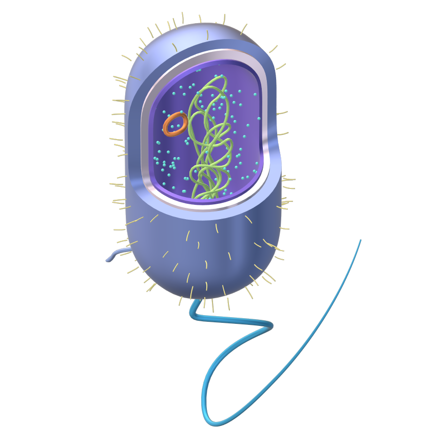
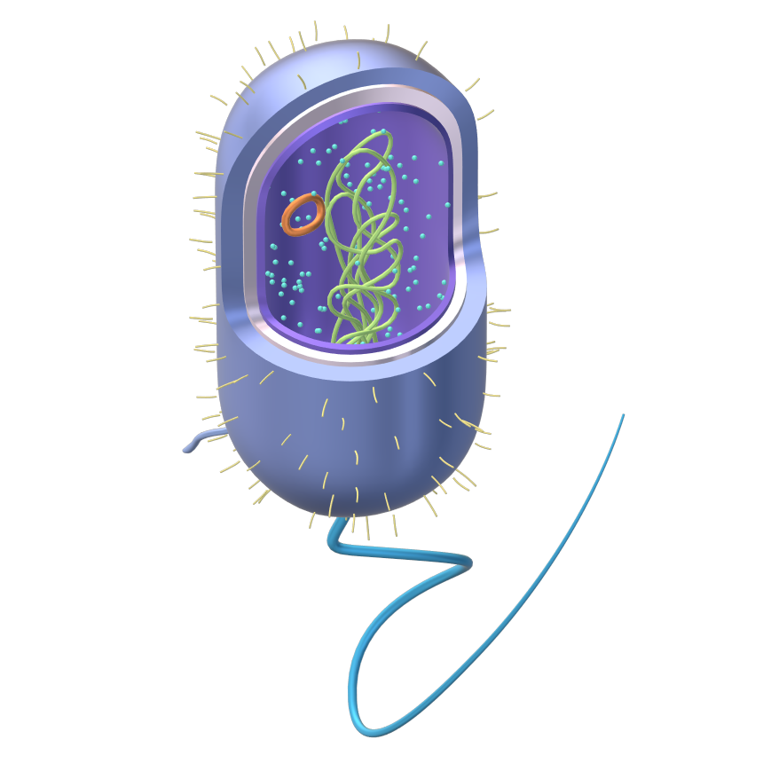

The Archean Eon marks a profound chapter in Earth’s history. It spans from about 4 billion to 2.5 billion years ago, following the Hadean Eon and preceding the Proterozoic Eon. This eon witnessed the formation of Earth’s first stable crust and the emergence of life. During the Archean, the planet was very different from today. The atmosphere was devoid of oxygen and rich in methane, creating a reducing environment. Volcanic activity was rampant, and the Earth’s crust was continuously reshaped by tectonic forces. Despite the harsh conditions, life found a way. The earliest evidence of life, in the form of prokaryotic microbes, dates back to around 3.5 to 3.7 billion years ago